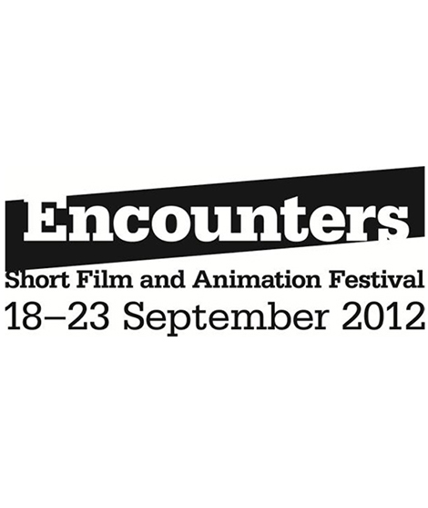
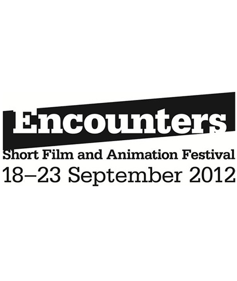

Public, 2018
Feature - Drama

Public recounts a year in the life of five boys at a British boarding school. Charlie, recently crowned Head Boy of the prestigious Nevill Holt College, begins to fall in love with his reserved rival Harold. Their tender bond helps soothe a secret trauma, but entails the rejection of Charlie’s best friend Sprake. Subjected to cruel rituals, the junior boys struggle to fit in: Tom joins the choir and finds a protector in the sympathetic music master; while Giles, betrayed by his older brother, looks for comfort elsewhere. Amid the repression and conservatism of the public school system, Public is a brutal love story that explores very different kinds of love.
Public is an urgent study of adolescence in the British public boarding school: the site of privilege, power and wounded masculinity that defines our contemporary political institutions.
Photograph © flickr user gratpik. Licensed under Creative Commons (CC BY-NC-ND 2.0)
Details
- The short script for Public was developed through the In_Script short film script development residency 2015 in Lithuania - Winner of the "Promising Screenwriter" award.
- Developed through the Creative Scotland Bellrock Screenwriting Residency 2017; mentored by Olivia Stewart.
Konsomatris, 2019
Short - Drama
Feeling an overwhelming pressure to have sex for the first time, Ahmet does what almost all teenage boys in North Cyprus do; he pays for it.
 
